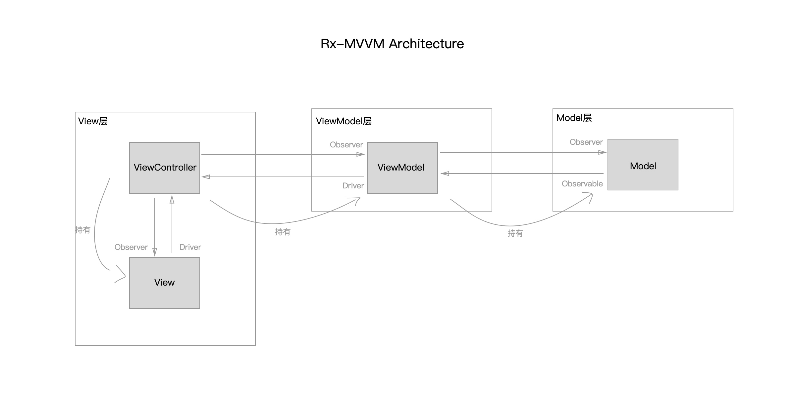

rx-mvvm
主要目的：对于日常业务开发，如何组织代码结构。
优点：
- vc代码更少，代码拆分更清晰，更容易维护
- 更方便测试
- 更方便复用 view
具体模块包括：controller、View、Model、逻辑代码
要面对的问题：
- View在哪里创建，view展示的数据从哪里来，view对event的处理如何暴露出去
- model数据更新时如何通知到view
- 具体的业务逻辑，应该写在哪里

VC作用
1.初始化view，viewModel
private var nameField: UITextField!
private var loginButton: UIButton!
private func setup() {
nameField = {
let textField = UITextField()
textField.borderStyle = .roundedRect
view.addSubview(textField)
textField.snp.makeConstraints {
$0.top.equalToSuperview().offset(200)
$0.width.equalTo(200)
$0.height.equalTo(40)
$0.centerX.equalToSuperview()
}
return textField
}()
loginButton = {
let button = UIButton()
button.setTitleColor(UIColor.gray, for: .normal)
view.addSubview(button)
button.snp.makeConstraints {
$0.top.equalTo(passwordField.snp.bottom).offset(20)
$0.width.equalTo(200)
$0.height.equalTo(40)
$0.centerX.equalToSuperview()
}
return button
}()
}
2. view 与 viewModel 相互绑定
private func bind() {
// ==== 事件绑定 view -> viewModel
loginButton.rx.tap
.flatMapLatest({ [weak self] _ -> Observable<(username: String?, password: String?)> in
guard let `self` = self else { return Observable.error(RxLoginVCError.fail) }
return Observable.just((username: self.nameField.text, password: self.passwordField.text))
})
.bind(to: viewModel.loginButtonTapObserver)
.disposed(by: bag)
// ==== viewModel -> view
// navigation title
viewModel.navigationBarTitleDriver
.drive(rx.title)
.disposed(by: bag)
// 封装 alert 的逻辑
showAlertObserver = AnyObserver(eventHandler: { [weak self] (event) in
guard let `self` = self, let element = event.element else { return }
self.showAlert(element)
})
viewModel.showAlertDriver
.drive(showAlertObserver)
.disposed(by: bag)
}
viewModel 作用
封装了 部分业务逻辑
class RxLoginVM: NSObject {
// MARK: Output
var navigationBarTitleDriver: Driver<String>!
// MARK: Input
var loginButtonTapObserver: AnyObserver<(username: String?, password: String?)> {
return loginButtonTapSubject.asObserver()
}
private func bind() {
// ViewModel -> View
navigationBarTitleDriver = Driver<String>
.just("Login Page")
// Model <-> ViewModel <-> View
loginButtonTapSubject.asObserver() // 用户点击登录按钮 VM <- View
.throttle(1, scheduler: MainScheduler.instance) // 节流，一秒最多处理一次 VM <- View
.flatMapLatest({ [weak self] tuple -> Observable<Bool?> in
guard let `self` = self else { return Observable.just(nil) }
guard let username = tuple.username, !username.isEmpty else {
self.showAlertSubject.onNext("empty username") // 提示：用户没输入用户名 VM -> View
return Observable.just(nil)
}
guard let password = tuple.password, !password.isEmpty else {
self.showAlertSubject.onNext("empty password") // 提示：用户没输入密码 VM -> View
return Observable.just(nil)
}
self.setLoginButtonHiddeSubject.onNext(true) // 正常登录前隐藏登录按钮 VM -> View
return self.model.login(username: tuple.username, password: tuple.password) // 正常登录调用 Model <-> VM
})
.do(onNext: { [weak self] _ in
self?.setLoginButtonHiddeSubject.onNext(false) // 无论结果如何显示登录按钮 VM -> View
})
.filter({
$0 != nil // 把异常情况过滤，因为已经提示过
})
.map { ($0 ?? false) ? "Login Succeed" : "Login Failed" } // 把登录结果的bool值转换为适当文本
.bind(to: showAlertSubject) // 把文本绑定到UI的提示控件上展示 VM -> View
.disposed(by: bag)
}
}
使用RxSwift库，解决绑定问题
demo地址
https://github.com/quding0308/RxLogin-MVVM-Example